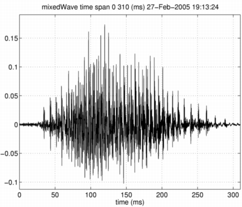

| | Morphing without side information | Contents | Index |
It is worthwhile to check that simple waveform superposition does not perform desired morphing function. A superposition function waveformMorphing is designed to mix waveform information of two M-objects according to the given amount r. In this case, the waveform of the first M-object is weighted by (1-r) and that of the second M-object is weighted by r and then added together. The following commands does this operation.
mixedWave = waveformMorphing(neutralHai,angryHai,0.5); displayMobject(mixedWave,'waveform','mixedWave');
Please note that the output of waveformMorphing is also a M-object to maintain compatibility. The morphed signal by this procedure sounds like two persons are speaking at the same time. This is not the desired behavior of auditory morphing.

| | Morphing without side information | Contents | Index |